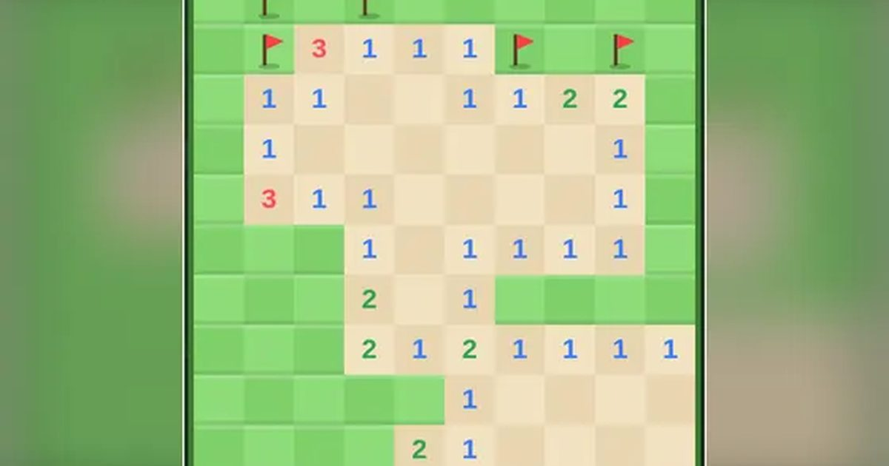

지뢰찾기
Minesweeper
퍼즐 · 추리무료설치 없음폰 · PC
▶ 지금 바로 하기로그인 없이 브라우저에서 바로 시작돼요
어떤 게임인가요?
숫자는 주변 8칸에 숨은 지뢰 개수예요. 추리해서 지뢰만 피해 모든 칸을 열면 클리어! 판을 깰수록 점수가 쌓이고, 빨리 깰수록 보너스.
목표 · 숫자 힌트로 지뢰 위치를 추리해, 지뢰를 밟지 않고 모든 안전한 칸을 여세요. 판을 깰수록 점수가 쌓여요.
이렇게도 찾아요
지뢰 찾기 게임추억의 지뢰찾기지뢰게임minesweepermine finderclassic minesweeper
#지뢰찾기 #추억의게임 #두뇌게임
게임 방법
- 칸을 누르면 열려요. 첫 번째로 누른 칸과 그 주변은 항상 안전해요.
- 숫자는 그 칸을 둘러싼 8칸 안에 있는 지뢰 개수예요. 0인 칸은 주변이 자동으로 열려요.
- 지뢰라고 생각되는 칸은 꾹 누르거나(PC는 오른쪽 클릭) 깃발 모드에서 눌러 깃발을 꽂아요.
- 열린 숫자 칸을 누르면, 주변 깃발 수가 숫자와 같을 때 나머지 주변 칸을 한 번에 열어요.
- 지뢰를 열면 끝. 모든 안전한 칸을 열면 클리어하고 다음 판으로 넘어가요.
- 판마다 지뢰 수 × 10점, 빨리 깨면 보너스. 쉬움 8×10 · 보통 10×14 · 어려움 12×18.
등장하는 것들
- 1 · 주변 지뢰 1개
- 2 · 주변 지뢰 2개
- 3 · 주변 지뢰 3개
- 깃발 · 지뢰 표시
- 지뢰 · 열면 끝
공략 팁
- 1 옆에 닫힌 칸이 하나뿐이면 그 칸이 지뢰예요.
- 벽 쪽 1-2-1 무늬는 양쪽 끝이 지뢰, 가운데는 안전.
- 확실하지 않으면 정보를 가장 많이 주는 칸부터 여세요.
이런 게임도 있어요
 십장생 짝맞추기짝맞추기 · 두 번 꺾어 잇기
십장생 짝맞추기짝맞추기 · 두 번 꺾어 잇기 제기차기타이밍 · 한 손
제기차기타이밍 · 한 손 필살 격투격투 · 1P/2P
필살 격투격투 · 1P/2P 반응속도 테스트측정 · 반사신경 · 1분
반응속도 테스트측정 · 반사신경 · 1분 글 타자 · 타자 빨리 치기타자 연습 · 문장
글 타자 · 타자 빨리 치기타자 연습 · 문장 한방 벽돌깨기조준 · 한 손
한방 벽돌깨기조준 · 한 손